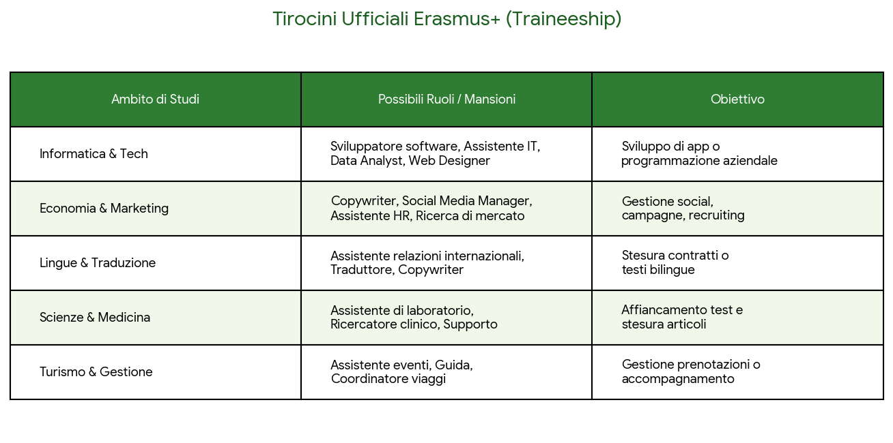
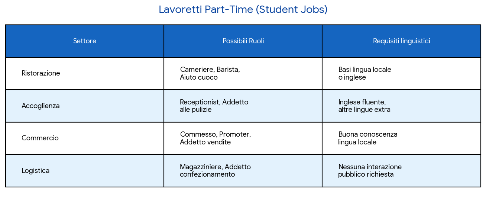

Sito realizzato da Girboiu Alessandro e Rossi Valerio, studenti di informatica presso l'ITT "Allievi Sangallo" di Terni
L'esperienza Erasmus+ in ambito lavorativo rappresenta un vero e proprio ponte verso il mercato internazionale, offrendo agli studenti la possibilità di svolgere tirocini ufficiali finanziati dall'Unione Europea presso aziende e startup estere, oppure di sperimentare lavori part-time durante il periodo di mobilità. Partecipare a queste attività non significa solo applicare sul campo le competenze tecniche del proprio percorso di studio, ma permette soprattutto di confrontarsi con ambienti multiculturali, perfezionare le lingue straniere e sviluppare una preziosa rete di contatti globali. Si tratta di un'opportunità straordinaria per accelerare la crescita personale e professionale, trasformando il percorso accademico in un trampolino di lancio ideale per una carriera senza confini.
Qui sotto vengono riportate due tabelle che distinguono i vari percorsi lavorativi in due: Tirocini Ufficiali ERASMUS+ e Lavoro Part Time (Students Jobs). La distinzione tra Tirocini ERASMUS+ e Lavoro Part-Time divide le esperienze studentesche in due rami: il primo punta sull'internazionalizzazione e sulla formazione coerente con gli studi (spesso con CFU e borse europee); il secondo offre indipendenza economica e flessibilità oraria sul territorio. Insieme, investono sia sulla crescita professionale globale sia sulla sostenibilità pratica del percorso universitario.

